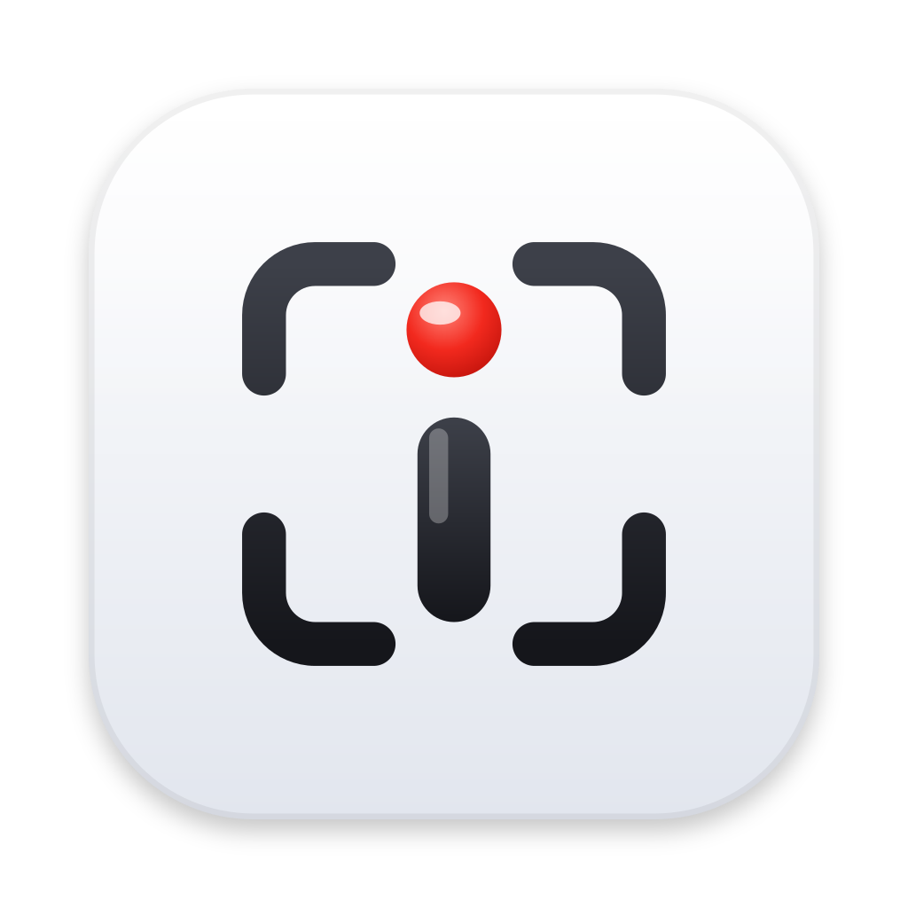

Windows
- Instalador en español, sin permisos de administrador.
- Se abre al iniciar sesión, en la bandeja (se puede desactivar).
Captura, anota y graba en segundos. Pensado para equipos de QA: pasos para reproducir, datos del entorno y video con cada clic visible.
Instaladores de la última versión.

Todo dentro de la app, sin servicios en la nube.
Región, ventana, pantalla completa o con desplazamiento. Flechas, texto, números, difuminado y OCR.
Clics y teclas visibles, micrófono y sonido del sistema, cámara web y exportación a GIF.
Recorta tramos, añade zoom, flechas y desenfoque, y cambia los efectos del puntero después de grabar.
Plantillas con pasos para reproducir y datos del entorno. Se copian con formato para Jira, Teams o correo.
Tras capturar: copia, guarda, anota o arrastra la imagen directamente a otra app.
Captura desde cualquier app con Ctrl+Mayús + número, sin abrir la ventana.
Si el sistema muestra un aviso la primera vez:
Pulsa Más información y luego Ejecutar de todas formas. Aparece con las apps nuevas que aún no tienen reputación en SmartScreen.
Abre Ajustes del Sistema → Privacidad y seguridad y pulsa Abrir igualmente, o haz clic derecho sobre Instant en Aplicaciones → Abrir.